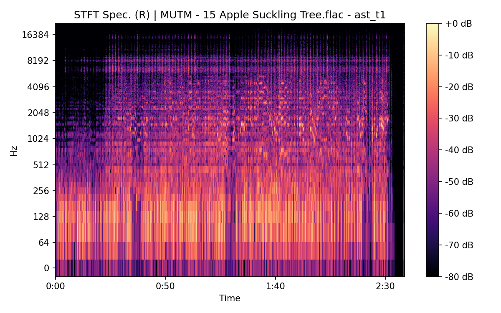
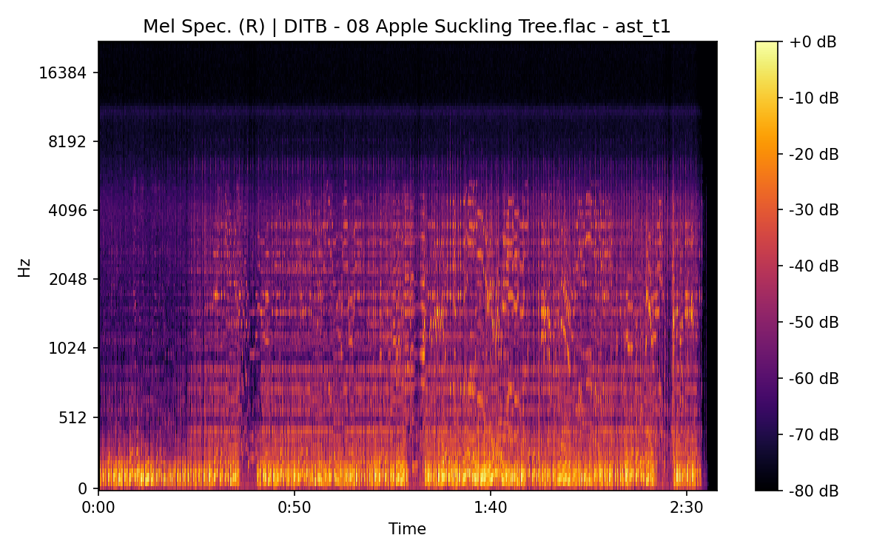
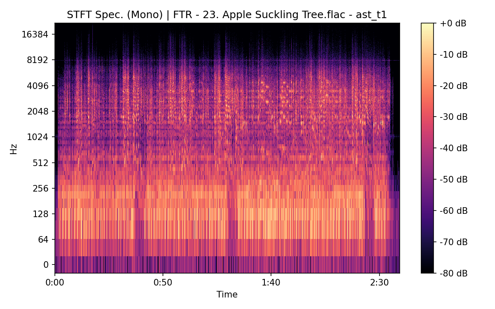

Apple Suckling Tree (Take 1)
(title taken from BS11)
Details
| label | orig_file | md5 | disc | track | duration_sec | duration_fmt | loudness | loudness_left | loudness_right | loudness_balance | rms | rms_left | rms_right | rms_balance | lr_corr | spectral_centroid |
|---|---|---|---|---|---|---|---|---|---|---|---|---|---|---|---|---|
| BS11 | 18 - Bob Dylan & The Band - Apple Suckling Tree (Take 1).wav | d7cc4a23ff0245f96cbde907957caead | 4 | 18 | 160.547 | 02:40:547 | -17.8471 | -17.9826 | -17.3086 | -0.673967 | 0.119005 | 0.118073 | 0.125297 | -0.00722315 | 0.907601 | 2312.09 |
| CAR | 04-18-Bob_Dylan-Apple_Suckling_Tree_Take_1-SMR.flac | ec8401e9da37015e91c5cef2186f87eb | 4 | 18 | 160.4 | 02:40:400 | -17.8426 | -17.9782 | -17.304 | -0.67427 | 0.119117 | 0.118183 | 0.125416 | -0.00723328 | 0.907601 | 2187.97 |
| ATWR | 25 Apple Suckling Tree - Take 1.flac | 1355e15cee3bc91c1a08059663dea803 | 4 | 25 | 159.227 | 02:39:227 | -18.2109 | -13.8449 | -18.741 | 4.89615 | 0.11875 | 0.197495 | 0.0999104 | 0.0975847 | 0.173463 | 2463.71 |
| MUTM | 15 Apple Suckling Tree.flac | fea7ed58a1843432a7af4589b4c1c6e8 | 1 | 15 | 158.613 | 02:38:613 | -17.9262 | -13.2973 | -18.742 | 5.44463 | 0.115811 | 0.198037 | 0.0921118 | 0.105925 | 0.128412 | 2340.11 |
| TGBT | 2-06 Apple Suckling Tree (Version 1).flac | 354cc20f68d81b34db50802e2adc55d3 | 2 | 6 | 161.493 | 02:41:493 | -17.1983 | -12.5641 | -18.4856 | 5.92148 | 0.13326 | 0.229106 | 0.100297 | 0.128809 | 0.172483 | 2415.51 |
| CBST | Dylan & Band - Safety Tape_Track15.flac | d875cffc34b7ba5c529d705cd9cad70d | 1 | 15 | 159.04 | 02:39:040 | -18.0896 | -13.5766 | -18.5705 | 4.99382 | 0.115433 | 0.194995 | 0.0955234 | 0.0994717 | 0.129946 | 2006.36 |
| DITB | 08 Apple Suckling Tree.flac | 4b5dade86fa06b0b46cb4943b4a103a2 | 1 | 8 | 157.667 | 02:37:667 | -19.0184 | -16.5134 | -17.3592 | 0.845778 | 0.104973 | 0.144096 | 0.11992 | 0.0241763 | 0.279733 | 1760.04 |
| FTR | 23. Apple Suckling Tree.flac | 0d63392ffa06cc03f322152d61ed1364 | 5 | 23 | 159.267 | 02:39:267 | -21.9199 | -17.903 | -20.0603 | 2.15731 | 0.060371 | 0.0931051 | 0.0575223 | 0.0355828 | 0.0945103 | 2109.44 |
| FTR | 11. Apple Suckling Tree.flac | 92ae564ba876ddd4826975c7f89e7d6f | 9 | 11 | 152.12 | 02:32:120 | -21.2679 | -22.3074 | -20.2956 | -2.01187 | 0.0818894 | 0.0725785 | 0.091476 | -0.0188975 | 0.994517 | 1357.79 |
| FTR | 21. Apple Suckling Tree.flac | f34d04b14dbff3ca6b00b32dd53d4f61 | 10 | 21 | 128.92 | 02:08:920 | -16.9156 | -19.0898 | -15.0268 | -4.063 | 0.128459 | 0.0995118 | 0.159184 | -0.0596725 | 0.966815 | 1072.65 |
| FTR | 24. Apple Suckling Tree.flac | 4d3d027a96dd4c33ebfe4cd6e3d57f42 | 10 | 24 | 151.773 | 02:31:773 | -17.0387 | -19.3504 | -15.0284 | -4.32203 | 0.140282 | 0.108413 | 0.174478 | -0.0660651 | 0.961666 | 1258.21 |
| CB | 23 Apple Suckling Tree - 1.flac | 10a98889f9f00210db3364cfac6345d5 | 5 | 23 | 159.267 | 02:39:267 | -21.9197 | -20.0443 | -17.8977 | -2.14653 | 0.0603691 | 0.0575157 | 0.0931057 | -0.0355899 | 0.0945096 | 2108.62 |
| CB | 22D Apple Suckling Tree T1.flac | 98934af68d8332741e68a2add074d282 | 7 | 24 | 152.12 | 02:32:120 | -21.2708 | -22.313 | -20.2957 | -2.01728 | 0.0818914 | 0.0725803 | 0.0914783 | -0.018898 | 0.994517 | 1357.68 |
| CB | 21 Apple Suckling Tree - 1.flac | afa03a090cc8e38b08cc3e4b8c0a4403 | 9 | 25 | 131.147 | 02:11:147 | -18.2552 | -20.2436 | -16.4483 | -3.79523 | 0.107677 | 0.0850796 | 0.132104 | -0.0470248 | 0.961197 | 1271.25 |
| CB | 24 Apple Suckling Tree - 4.flac | 1b2c53e2f25a3e48e4ab7bd65cd390c5 | 9 | 26 | 151.347 | 02:31:347 | -18.2139 | -20.4254 | -16.2136 | -4.21181 | 0.122086 | 0.0959171 | 0.150593 | -0.0546757 | 0.955712 | 1352.49 |
Plots

Pitch & Speed Analysis (cents)
Reference version: BS11
| song_label | ref_label | cmp_label | cmp_file | tuning_cents_cmp | tuning_cents_ref | delta_tuning_cents | semitone_shift_vs_ref | chroma_similarity | speed_factor_from_pitch | duration_ratio_ref_over_cmp |
|---|---|---|---|---|---|---|---|---|---|---|
| ast_t1 | BS11 | BS11 | 18 - Bob Dylan & The Band - Apple Suckling Tree (Take 1).wav | -22 | -22 | 0 | 0 | 1 | 1 | 1 |
| ast_t1 | BS11 | CAR | 04-18-Bob_Dylan-Apple_Suckling_Tree_Take_1-SMR.flac | -21 | -22 | 1 | 0 | 0.999991 | 1 | 1.00092 |
| ast_t1 | BS11 | ATWR | 25 Apple Suckling Tree - Take 1.flac | -7 | -22 | 15 | 0 | 0.976731 | 1 | 1.00829 |
| ast_t1 | BS11 | MUTM | 15 Apple Suckling Tree.flac | 19 | -22 | 41 | 0 | 0.965527 | 1 | 1.01219 |
| ast_t1 | BS11 | TGBT | 2-06 Apple Suckling Tree (Version 1).flac | -20 | -22 | 2 | 0 | 0.99083 | 1 | 0.994138 |
| ast_t1 | BS11 | CBST | Dylan & Band - Safety Tape_Track15.flac | -25 | -22 | -3 | 0 | 0.98826 | 1 | 1.00947 |
| ast_t1 | BS11 | DITB | 08 Apple Suckling Tree.flac | 0 | -22 | 22 | 0 | 0.973065 | 1 | 1.01827 |
| ast_t1 | BS11 | FTR | 23. Apple Suckling Tree.flac | 6 | -22 | 28 | 0 | 0.975024 | 1 | 1.00804 |
| ast_t1 | BS11 | FTR | 11. Apple Suckling Tree.flac | 46 | -22 | 68 | -1 | 0.983323 | 0.943874 | 1.05539 |
| ast_t1 | BS11 | FTR | 21. Apple Suckling Tree.flac | -16 | -22 | 6 | 0 | 0.965385 | 1 | 1.24532 |
| ast_t1 | BS11 | FTR | 24. Apple Suckling Tree.flac | 20 | -22 | 42 | -1 | 0.965681 | 0.943874 | 1.05781 |
| ast_t1 | BS11 | CB | 23 Apple Suckling Tree - 1.flac | 5 | -22 | 27 | 0 | 0.973043 | 1 | 1.00804 |
| ast_t1 | BS11 | CB | 22D Apple Suckling Tree T1.flac | 47 | -22 | 69 | -1 | 0.982983 | 0.943874 | 1.05539 |
| ast_t1 | BS11 | CB | 21 Apple Suckling Tree - 1.flac | -14 | -22 | 8 | 0 | 0.96444 | 1 | 1.22418 |
| ast_t1 | BS11 | CB | 24 Apple Suckling Tree - 4.flac | 19 | -22 | 41 | 0 | 0.967701 | 1 | 1.06079 |
Pitch/Speed analysis (reference = BS11)
============================================================
BS11 - 18 - Bob Dylan & The Band - Apple Suckling Tree (Take 1).wav: shift=0 st ; Δtuning=0.0 cents ; speed_from_pitch=1.0000 ; duration_ratio(ref/cmp)=1.0000
CAR - 04-18-Bob_Dylan-Apple_Suckling_Tree_Take_1-SMR.flac: shift=0 st ; Δtuning=1.0 cents ; speed_from_pitch=1.0000 ; duration_ratio(ref/cmp)=1.0009
ATWR - 25 Apple Suckling Tree - Take 1.flac: shift=0 st ; Δtuning=15.0 cents ; speed_from_pitch=1.0000 ; duration_ratio(ref/cmp)=1.0083
MUTM - 15 Apple Suckling Tree.flac: shift=0 st ; Δtuning=41.0 cents ; speed_from_pitch=1.0000 ; duration_ratio(ref/cmp)=1.0122
TGBT - 2-06 Apple Suckling Tree (Version 1).flac: shift=0 st ; Δtuning=2.0 cents ; speed_from_pitch=1.0000 ; duration_ratio(ref/cmp)=0.9941
CBST - Dylan & Band - Safety Tape_Track15.flac: shift=0 st ; Δtuning=-3.0 cents ; speed_from_pitch=1.0000 ; duration_ratio(ref/cmp)=1.0095
DITB - 08 Apple Suckling Tree.flac: shift=0 st ; Δtuning=22.0 cents ; speed_from_pitch=1.0000 ; duration_ratio(ref/cmp)=1.0183
FTR - 23. Apple Suckling Tree.flac: shift=0 st ; Δtuning=28.0 cents ; speed_from_pitch=1.0000 ; duration_ratio(ref/cmp)=1.0080
FTR - 11. Apple Suckling Tree.flac: shift=-1 st ; Δtuning=68.0 cents ; speed_from_pitch=0.9439 ; duration_ratio(ref/cmp)=1.0554
FTR - 21. Apple Suckling Tree.flac: shift=0 st ; Δtuning=6.0 cents ; speed_from_pitch=1.0000 ; duration_ratio(ref/cmp)=1.2453
FTR - 24. Apple Suckling Tree.flac: shift=-1 st ; Δtuning=42.0 cents ; speed_from_pitch=0.9439 ; duration_ratio(ref/cmp)=1.0578
CB - 23 Apple Suckling Tree - 1.flac: shift=0 st ; Δtuning=27.0 cents ; speed_from_pitch=1.0000 ; duration_ratio(ref/cmp)=1.0080
CB - 22D Apple Suckling Tree T1.flac: shift=-1 st ; Δtuning=69.0 cents ; speed_from_pitch=0.9439 ; duration_ratio(ref/cmp)=1.0554
CB - 21 Apple Suckling Tree - 1.flac: shift=0 st ; Δtuning=8.0 cents ; speed_from_pitch=1.0000 ; duration_ratio(ref/cmp)=1.2242
CB - 24 Apple Suckling Tree - 4.flac: shift=0 st ; Δtuning=41.0 cents ; speed_from_pitch=1.0000 ; duration_ratio(ref/cmp)=1.0608
Stereo Balance
BS11


CAR


ATWR


MUTM



TGBT


CBST


DITB


FTR


FTR


FTR


FTR


CB


CB


CB


CB


Spectrograms (Mono)
BS11
CAR

ATWR
MUTM


TGBT
CBST
DITB

FTR


FTR


FTR


FTR


CB

CB


CB


CB